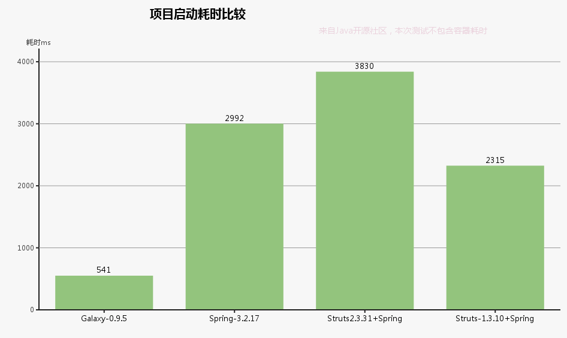

同我们一起打造属于你的Java Web框架
希望更多志同道合的朋友参与到Galaxy Framework开源项目的开发中，在获得更多自我提升的同时，拥抱开源文化，发挥社区的力量。为广大Java开发和爱好者提供更好的选择和服务支持。
内置Bean convert类型转换是spring内置和cglib的2倍，apache beanutils的10倍；预缓存机制使初次请求和频繁访问缓存的性能达到一致；启动demo演示实例耗时在500ms左右；内置模板引擎httl，性能是freemarker的9倍；velocity的5倍。让您的 Web 应用可以高速载入。
目前Jar为172KB，只依赖slf4j日志接口和cglib代理插件，共554Kb。通过最佳项目实践，在保证性能和稳定的前提下，引入最优秀的第三插件。在相对复杂的业务场景范围内，尽可能保证最终项目发布体积在6MB之内甚至更小，使JVM初始化的单例/静态类相对减少。
预缓存实体类的属性和数据表字段关系到内存，并初始化数据库连接池，避免第一次的类型转换和创建连接等待；采用和Spring同样的英文注解，使学习无陡峭；Action的同一方法返回处理，支持json数据和oo对象共用，并且支持请求参数回显；dao层无需实现接口。
不过度封装Servlet，保证在相对灵活的前提下，减少框架的侵入性；过滤器使用Serlvet原生api，静态资源放行要求在Web.xml里并不做中转到DefaultServlet，Filter和Aop放弃责任执行链，Action暴露原生Request，预置上传基础封装，开发者可以在相对约定下自由定制。
希望更多志同道合的朋友参与到Galaxy Framework开源项目的开发中，在获得更多自我提升的同时，拥抱开源文化，发挥社区的力量。为广大Java开发和爱好者提供更好的选择和服务支持。

Galaxy Framework 由Javaosc Team开发，旨在提供更加轻巧和高性能的Web开发方案，设计更加符合国内程序员的习惯，赋予了它更多精巧、创新的可能。是Javaosc社区的核心框架，期待它能为广大Java开发和爱好者提供更好的选择和服务支持，如果阁下有更好的设计和建议，欢迎通过Github 给我们push一些代码，在这里提前先感谢下无私的您们。
待补充